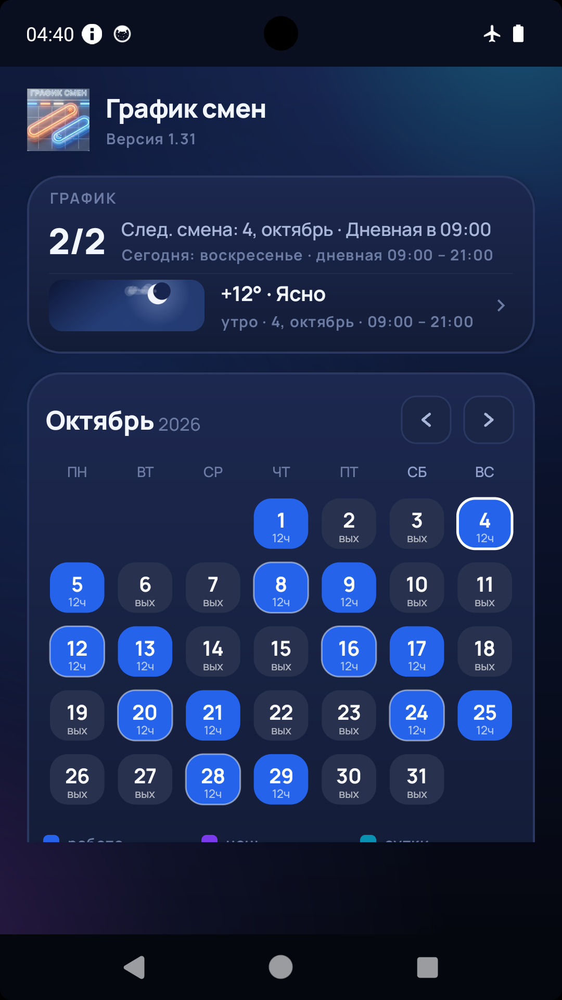
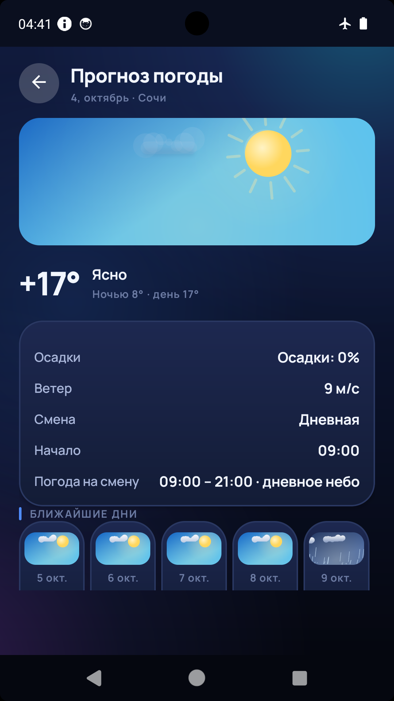
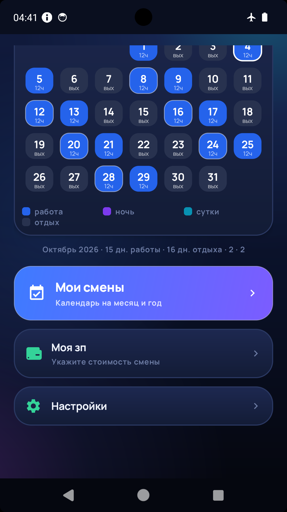

Всё, что нужно для работы со сменным графиком, в одном приложении.
Шесть популярных схем смен — 2/2, 5/2, 6/1, 3/3, день-ночь-48 и сутки-трое.
Отмечаете дни цикла в календаре, приложение само собирает из них цикл: дневные, ночные и суточные смены.
Цветовая маркировка каждого дня: дневная смена, ночная, суточная, выходной, отпуск и больничный.
Разовые изменения дней не сбивают основной график: отметили отпуск или больничный — цикл продолжается как прежде.
Ставится как настоящий будильник: обходит «Не беспокоить» и беззвучный режим. Напоминание за 15 минут, полчаса, час, два часа или сутки — отдельно.
Показывает погоду на утро, день, вечер или ночь — по времени начала ближайшей смены, а не усреднение за все смены сразу.
Указываете стоимость смены и период — приложение считает сумму за месяц и год.
Смены через полночь и смены на 24 часа. Своё время начала и окончания для каждого вида смены.
Реальные экраны приложения на Android.



Последняя стабильная версия — 1.34.